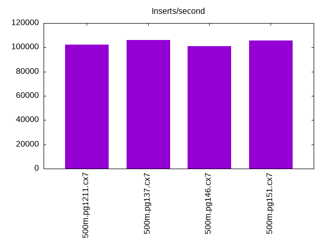
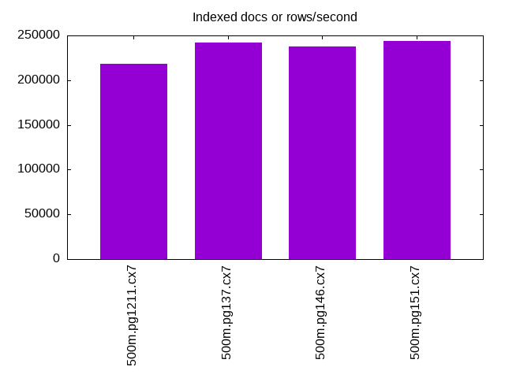
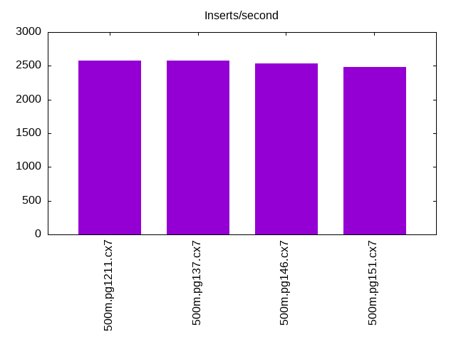
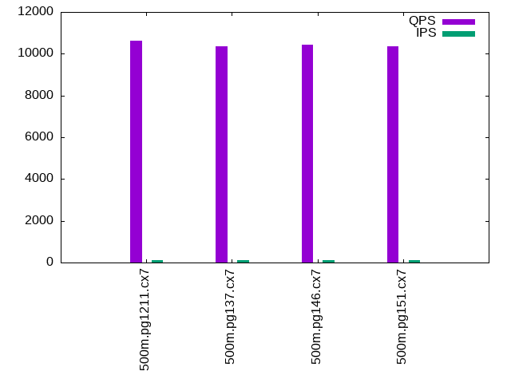
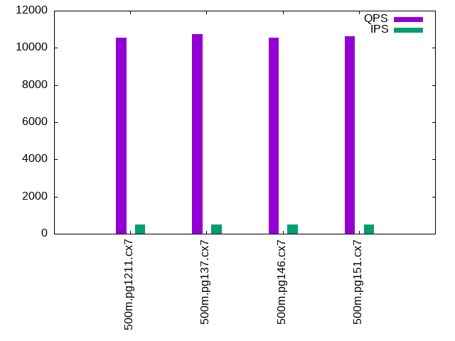
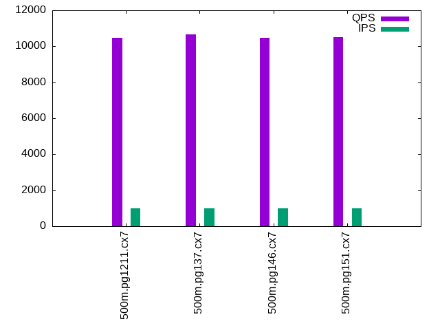

This is a report for the insert benchmark with 500M docs and 1 client(s). It is generated by scripts (bash, awk, sed) and Tufte might not be impressed. An overview of the insert benchmark is here and a short update is here. Below, by DBMS, I mean DBMS+version.config. An example is my8020.c10b40 where my means MySQL, 8020 is version 8.0.20 and c10b40 is the name for the configuration file.
The test server is an Intel NUC with 4 cores, 16G RAM and a Samsung 970 EVO. More details are here. Clients and the DBMS share one server. The per-database configs are in the per-database subdirectories here.
The tested DBMS are:
The numbers are inserts/s for l.i0 and l.i1, indexed docs (or rows) /s for l.x and queries/s for q*.2. The values are the average rate over the entire test for inserts (IPS) and queries (QPS). The range of values for IPS and QPS is split into 3 parts: bottom 25%, middle 50%, top 25%. Values in the bottom 25% have a red background, values in the top 25% have a green background and values in the middle have no color. A gray background is used for values that can be ignored because the DBMS did not sustain the target insert rate. Red backgrounds are not used when the minimum value is within 80% of the max value.
| dbms | l.i0 | l.x | l.i1 | q100.1 | q500.1 | q1000.1 |
|---|---|---|---|---|---|---|
| 500m.pg1211.cx7 | 102438 | 218289 | 2573 | 10625 | 10559 | 10466 |
| 500m.pg137.cx7 | 105910 | 242179 | 2573 | 10338 | 10757 | 10669 |
| 500m.pg146.cx7 | 101071 | 238030 | 2533 | 10447 | 10548 | 10469 |
| 500m.pg151.cx7 | 105552 | 243595 | 2484 | 10339 | 10628 | 10509 |
This lists the average rate of inserts/s for the tests that do inserts concurrent with queries. For such tests the query rate is listed in the table above. The read+write tests are setup so that the insert rate should match the target rate every second. Cells that are not at least 95% of the target have a red background to indicate a failure to satisfy the target.
| dbms | q100.1 | q500.1 | q1000.1 |
|---|---|---|---|
| pg1211.cx7 | 100 | 499 | 999 |
| pg137.cx7 | 100 | 499 | 999 |
| pg146.cx7 | 100 | 499 | 999 |
| pg151.cx7 | 100 | 500 | 999 |
| target | 100 | 500 | 1000 |
l.i0: load without secondary indexes. Graphs for performance per 1-second interval are here.
Average throughput:
Insert response time histogram: each cell has the percentage of responses that take <= the time in the header and max is the max response time in seconds. For the max column values in the top 25% of the range have a red background and in the bottom 25% of the range have a green background. The red background is not used when the min value is within 80% of the max value.
| dbms | 256us | 1ms | 4ms | 16ms | 64ms | 256ms | 1s | 4s | 16s | gt | max |
|---|---|---|---|---|---|---|---|---|---|---|---|
| pg1211.cx7 | 90.350 | 9.648 | 0.002 | 0.001 | 0.053 | ||||||
| pg137.cx7 | 95.853 | 4.144 | 0.003 | 0.001 | nonzero | nonzero | 0.351 | ||||
| pg146.cx7 | 86.668 | 13.329 | 0.002 | 0.001 | nonzero | 0.198 | |||||
| pg151.cx7 | 96.145 | 3.852 | 0.002 | nonzero | nonzero | 0.148 |
Performance metrics for the DBMS listed above. Some are normalized by throughput, others are not. Legend for results is here.
ips qps rps rmbps wps wmbps rpq rkbpq wpi wkbpi csps cpups cspq cpupq dbgb1 dbgb2 rss maxop p50 p99 tag 102438 0 44 0.4 193.5 39.5 0.000 0.004 0.002 0.395 12254 40.5 0.120 16 47.8 55.8 0.0 0.053 102587 97491 500m.pg1211.cx7 105910 0 38 0.3 155.7 50.4 0.000 0.003 0.001 0.487 12725 42.1 0.120 16 47.8 62.7 0.0 0.351 106482 97893 500m.pg137.cx7 101071 0 41 0.3 140.6 47.2 0.000 0.003 0.001 0.478 12109 39.9 0.120 16 47.8 62.9 0.0 0.198 101392 96133 500m.pg146.cx7 105552 0 40 0.3 142.0 48.4 0.000 0.003 0.001 0.469 12566 41.8 0.119 16 47.8 64.2 0.0 0.148 105985 97394 500m.pg151.cx7
l.x: create secondary indexes.
Average throughput:
Performance metrics for the DBMS listed above. Some are normalized by throughput, others are not. Legend for results is here.
ips qps rps rmbps wps wmbps rpq rkbpq wpi wkbpi csps cpups cspq cpupq dbgb1 dbgb2 rss maxop p50 p99 tag 218289 0 566 68.3 468.6 101.3 0.003 0.320 0.002 0.475 702 22.8 0.003 4 91.9 113.7 0.0 0.003 NA NA 500m.pg1211.cx7 242179 0 600 73.9 202.8 79.4 0.002 0.312 0.001 0.336 571 23.6 0.002 4 91.9 109.1 0.0 0.003 NA NA 500m.pg137.cx7 238030 0 586 72.2 194.0 75.4 0.002 0.311 0.001 0.324 554 23.0 0.002 4 91.9 109.3 0.0 0.003 NA NA 500m.pg146.cx7 243595 0 673 83.3 213.7 88.2 0.003 0.350 0.001 0.371 622 23.1 0.003 4 91.9 109.1 0.0 0.003 NA NA 500m.pg151.cx7
l.i1: continue load after secondary indexes created. Graphs for performance per 1-second interval are here.
Average throughput:
Insert response time histogram: each cell has the percentage of responses that take <= the time in the header and max is the max response time in seconds. For the max column values in the top 25% of the range have a red background and in the bottom 25% of the range have a green background. The red background is not used when the min value is within 80% of the max value.
| dbms | 256us | 1ms | 4ms | 16ms | 64ms | 256ms | 1s | 4s | 16s | gt | max |
|---|---|---|---|---|---|---|---|---|---|---|---|
| pg1211.cx7 | 34.474 | 65.486 | 0.041 | 0.172 | |||||||
| pg137.cx7 | 34.464 | 65.372 | 0.165 | 0.161 | |||||||
| pg146.cx7 | 32.553 | 67.358 | 0.090 | 0.135 | |||||||
| pg151.cx7 | 31.594 | 68.210 | 0.196 | 0.147 |
Performance metrics for the DBMS listed above. Some are normalized by throughput, others are not. Legend for results is here.
ips qps rps rmbps wps wmbps rpq rkbpq wpi wkbpi csps cpups cspq cpupq dbgb1 dbgb2 rss maxop p50 p99 tag 2573 0 3438 27.5 4314.6 68.3 1.336 10.944 1.677 27.197 8005 22.0 3.112 342 93.6 113.2 0.0 0.172 2597 1548 500m.pg1211.cx7 2573 0 3480 27.8 4402.5 70.6 1.353 11.078 1.711 28.103 8129 22.1 3.160 344 93.6 114.4 0.0 0.161 2597 1548 500m.pg137.cx7 2533 0 3405 27.2 4300.4 69.0 1.344 11.012 1.698 27.901 7908 22.0 3.122 347 93.6 119.6 0.0 0.135 2549 1348 500m.pg146.cx7 2484 0 3346 26.8 4244.7 68.2 1.347 11.042 1.709 28.105 7785 22.1 3.134 356 93.6 119.4 0.0 0.147 2547 1248 500m.pg151.cx7
q100.1: range queries with 100 insert/s per client. Graphs for performance per 1-second interval are here.
Average throughput:
Query response time histogram: each cell has the percentage of responses that take <= the time in the header and max is the max response time in seconds. For max values in the top 25% of the range have a red background and in the bottom 25% of the range have a green background. The red background is not used when the min value is within 80% of the max value.
| dbms | 256us | 1ms | 4ms | 16ms | 64ms | 256ms | 1s | 4s | 16s | gt | max |
|---|---|---|---|---|---|---|---|---|---|---|---|
| pg1211.cx7 | 99.827 | 0.172 | 0.002 | nonzero | 0.015 | ||||||
| pg137.cx7 | 99.136 | 0.847 | 0.013 | 0.005 | nonzero | 0.050 | |||||
| pg146.cx7 | 99.547 | 0.438 | 0.013 | 0.002 | 0.015 | ||||||
| pg151.cx7 | 99.317 | 0.674 | 0.007 | 0.002 | nonzero | 0.050 |
Insert response time histogram: each cell has the percentage of responses that take <= the time in the header and max is the max response time in seconds. For max values in the top 25% of the range have a red background and in the bottom 25% of the range have a green background. The red background is not used when the min value is within 80% of the max value.
| dbms | 256us | 1ms | 4ms | 16ms | 64ms | 256ms | 1s | 4s | 16s | gt | max |
|---|---|---|---|---|---|---|---|---|---|---|---|
| pg1211.cx7 | 77.417 | 22.583 | 0.027 | ||||||||
| pg137.cx7 | 73.653 | 26.333 | 0.014 | 0.072 | |||||||
| pg146.cx7 | 92.444 | 7.556 | 0.054 | ||||||||
| pg151.cx7 | 92.472 | 7.514 | 0.014 | 0.068 |
Performance metrics for the DBMS listed above. Some are normalized by throughput, others are not. Legend for results is here.
ips qps rps rmbps wps wmbps rpq rkbpq wpi wkbpi csps cpups cspq cpupq dbgb1 dbgb2 rss maxop p50 p99 tag 100 10625 147 1.2 267.1 4.2 0.014 0.113 2.677 43.037 41109 25.6 3.869 96 93.7 103.3 0.0 0.015 10729 6920 500m.pg1211.cx7 100 10338 151 1.2 352.3 5.0 0.015 0.121 3.526 51.011 40011 25.7 3.870 99 93.7 106.4 0.0 0.050 10788 1790 500m.pg137.cx7 100 10447 151 1.2 393.8 5.3 0.014 0.120 3.946 54.760 40391 25.7 3.866 98 93.7 111.7 0.0 0.015 10724 2765 500m.pg146.cx7 100 10339 151 1.2 270.8 4.2 0.015 0.120 2.714 43.375 39947 25.6 3.864 99 93.7 111.1 0.0 0.050 10665 1982 500m.pg151.cx7
q500.1: range queries with 500 insert/s per client. Graphs for performance per 1-second interval are here.
Average throughput:
Query response time histogram: each cell has the percentage of responses that take <= the time in the header and max is the max response time in seconds. For max values in the top 25% of the range have a red background and in the bottom 25% of the range have a green background. The red background is not used when the min value is within 80% of the max value.
| dbms | 256us | 1ms | 4ms | 16ms | 64ms | 256ms | 1s | 4s | 16s | gt | max |
|---|---|---|---|---|---|---|---|---|---|---|---|
| pg1211.cx7 | 99.970 | 0.029 | 0.001 | nonzero | 0.004 | ||||||
| pg137.cx7 | 99.971 | 0.028 | 0.001 | nonzero | 0.014 | ||||||
| pg146.cx7 | 99.967 | 0.031 | 0.001 | nonzero | 0.006 | ||||||
| pg151.cx7 | 99.968 | 0.031 | 0.001 | nonzero | 0.007 |
Insert response time histogram: each cell has the percentage of responses that take <= the time in the header and max is the max response time in seconds. For max values in the top 25% of the range have a red background and in the bottom 25% of the range have a green background. The red background is not used when the min value is within 80% of the max value.
| dbms | 256us | 1ms | 4ms | 16ms | 64ms | 256ms | 1s | 4s | 16s | gt | max |
|---|---|---|---|---|---|---|---|---|---|---|---|
| pg1211.cx7 | 94.633 | 5.367 | 0.064 | ||||||||
| pg137.cx7 | 93.892 | 6.108 | 0.062 | ||||||||
| pg146.cx7 | 95.583 | 4.411 | 0.006 | 0.079 | |||||||
| pg151.cx7 | 96.236 | 3.761 | 0.003 | 0.079 |
Performance metrics for the DBMS listed above. Some are normalized by throughput, others are not. Legend for results is here.
ips qps rps rmbps wps wmbps rpq rkbpq wpi wkbpi csps cpups cspq cpupq dbgb1 dbgb2 rss maxop p50 p99 tag 499 10559 643 5.1 1054.3 17.9 0.061 0.494 2.111 36.735 41961 26.8 3.974 102 93.9 98.7 0.0 0.004 10564 10436 500m.pg1211.cx7 499 10757 644 5.1 1039.8 17.7 0.060 0.486 2.082 36.395 42705 26.8 3.970 100 93.9 99.0 0.0 0.014 10760 10617 500m.pg137.cx7 499 10548 644 5.1 985.1 17.2 0.061 0.496 1.972 35.216 41859 26.9 3.968 102 93.9 100.2 0.0 0.006 10549 10421 500m.pg146.cx7 500 10628 644 5.1 987.3 17.2 0.061 0.493 1.977 35.246 42138 26.8 3.965 101 93.9 100.2 0.0 0.007 10628 10501 500m.pg151.cx7
q1000.1: range queries with 1000 insert/s per client. Graphs for performance per 1-second interval are here.
Average throughput:
Query response time histogram: each cell has the percentage of responses that take <= the time in the header and max is the max response time in seconds. For max values in the top 25% of the range have a red background and in the bottom 25% of the range have a green background. The red background is not used when the min value is within 80% of the max value.
| dbms | 256us | 1ms | 4ms | 16ms | 64ms | 256ms | 1s | 4s | 16s | gt | max |
|---|---|---|---|---|---|---|---|---|---|---|---|
| pg1211.cx7 | 99.916 | 0.082 | 0.002 | nonzero | 0.015 | ||||||
| pg137.cx7 | 99.921 | 0.077 | 0.002 | nonzero | 0.015 | ||||||
| pg146.cx7 | 99.915 | 0.083 | 0.002 | nonzero | 0.009 | ||||||
| pg151.cx7 | 99.915 | 0.082 | 0.002 | nonzero | 0.009 |
Insert response time histogram: each cell has the percentage of responses that take <= the time in the header and max is the max response time in seconds. For max values in the top 25% of the range have a red background and in the bottom 25% of the range have a green background. The red background is not used when the min value is within 80% of the max value.
| dbms | 256us | 1ms | 4ms | 16ms | 64ms | 256ms | 1s | 4s | 16s | gt | max |
|---|---|---|---|---|---|---|---|---|---|---|---|
| pg1211.cx7 | 89.487 | 10.475 | 0.037 | 0.099 | |||||||
| pg137.cx7 | 89.231 | 10.746 | 0.024 | 0.095 | |||||||
| pg146.cx7 | 87.097 | 12.885 | 0.018 | 0.100 | |||||||
| pg151.cx7 | 88.372 | 11.626 | 0.001 | 0.065 |
Performance metrics for the DBMS listed above. Some are normalized by throughput, others are not. Legend for results is here.
ips qps rps rmbps wps wmbps rpq rkbpq wpi wkbpi csps cpups cspq cpupq dbgb1 dbgb2 rss maxop p50 p99 tag 999 10466 1329 10.6 1805.3 33.3 0.127 1.035 1.807 34.126 43087 28.1 4.117 107 94.9 102.3 0.0 0.015 10472 10313 500m.pg1211.cx7 999 10669 1331 10.6 1815.2 33.1 0.125 1.016 1.817 33.947 43862 28.2 4.111 106 94.9 102.3 0.0 0.015 10677 10516 500m.pg137.cx7 999 10469 1331 10.6 1795.0 32.4 0.127 1.038 1.797 33.214 43106 28.2 4.117 108 94.9 104.0 0.0 0.009 10469 10325 500m.pg146.cx7 999 10509 1339 10.7 1802.5 32.4 0.127 1.040 1.805 33.253 43219 28.1 4.113 107 94.9 104.0 0.0 0.009 10516 10373 500m.pg151.cx7
l.i0: load without secondary indexes
Performance metrics for all DBMS, not just the ones listed above. Some are normalized by throughput, others are not. Legend for results is here.
ips qps rps rmbps wps wmbps rpq rkbpq wpi wkbpi csps cpups cspq cpupq dbgb1 dbgb2 rss maxop p50 p99 tag 102438 0 44 0.4 193.5 39.5 0.000 0.004 0.002 0.395 12254 40.5 0.120 16 47.8 55.8 0.0 0.053 102587 97491 500m.pg1211.cx7 105910 0 38 0.3 155.7 50.4 0.000 0.003 0.001 0.487 12725 42.1 0.120 16 47.8 62.7 0.0 0.351 106482 97893 500m.pg137.cx7 101071 0 41 0.3 140.6 47.2 0.000 0.003 0.001 0.478 12109 39.9 0.120 16 47.8 62.9 0.0 0.198 101392 96133 500m.pg146.cx7 105552 0 40 0.3 142.0 48.4 0.000 0.003 0.001 0.469 12566 41.8 0.119 16 47.8 64.2 0.0 0.148 105985 97394 500m.pg151.cx7
l.x: create secondary indexes
Performance metrics for all DBMS, not just the ones listed above. Some are normalized by throughput, others are not. Legend for results is here.
ips qps rps rmbps wps wmbps rpq rkbpq wpi wkbpi csps cpups cspq cpupq dbgb1 dbgb2 rss maxop p50 p99 tag 218289 0 566 68.3 468.6 101.3 0.003 0.320 0.002 0.475 702 22.8 0.003 4 91.9 113.7 0.0 0.003 NA NA 500m.pg1211.cx7 242179 0 600 73.9 202.8 79.4 0.002 0.312 0.001 0.336 571 23.6 0.002 4 91.9 109.1 0.0 0.003 NA NA 500m.pg137.cx7 238030 0 586 72.2 194.0 75.4 0.002 0.311 0.001 0.324 554 23.0 0.002 4 91.9 109.3 0.0 0.003 NA NA 500m.pg146.cx7 243595 0 673 83.3 213.7 88.2 0.003 0.350 0.001 0.371 622 23.1 0.003 4 91.9 109.1 0.0 0.003 NA NA 500m.pg151.cx7
l.i1: continue load after secondary indexes created
Performance metrics for all DBMS, not just the ones listed above. Some are normalized by throughput, others are not. Legend for results is here.
ips qps rps rmbps wps wmbps rpq rkbpq wpi wkbpi csps cpups cspq cpupq dbgb1 dbgb2 rss maxop p50 p99 tag 2573 0 3438 27.5 4314.6 68.3 1.336 10.944 1.677 27.197 8005 22.0 3.112 342 93.6 113.2 0.0 0.172 2597 1548 500m.pg1211.cx7 2573 0 3480 27.8 4402.5 70.6 1.353 11.078 1.711 28.103 8129 22.1 3.160 344 93.6 114.4 0.0 0.161 2597 1548 500m.pg137.cx7 2533 0 3405 27.2 4300.4 69.0 1.344 11.012 1.698 27.901 7908 22.0 3.122 347 93.6 119.6 0.0 0.135 2549 1348 500m.pg146.cx7 2484 0 3346 26.8 4244.7 68.2 1.347 11.042 1.709 28.105 7785 22.1 3.134 356 93.6 119.4 0.0 0.147 2547 1248 500m.pg151.cx7
q100.1: range queries with 100 insert/s per client
Performance metrics for all DBMS, not just the ones listed above. Some are normalized by throughput, others are not. Legend for results is here.
ips qps rps rmbps wps wmbps rpq rkbpq wpi wkbpi csps cpups cspq cpupq dbgb1 dbgb2 rss maxop p50 p99 tag 100 10625 147 1.2 267.1 4.2 0.014 0.113 2.677 43.037 41109 25.6 3.869 96 93.7 103.3 0.0 0.015 10729 6920 500m.pg1211.cx7 100 10338 151 1.2 352.3 5.0 0.015 0.121 3.526 51.011 40011 25.7 3.870 99 93.7 106.4 0.0 0.050 10788 1790 500m.pg137.cx7 100 10447 151 1.2 393.8 5.3 0.014 0.120 3.946 54.760 40391 25.7 3.866 98 93.7 111.7 0.0 0.015 10724 2765 500m.pg146.cx7 100 10339 151 1.2 270.8 4.2 0.015 0.120 2.714 43.375 39947 25.6 3.864 99 93.7 111.1 0.0 0.050 10665 1982 500m.pg151.cx7
q500.1: range queries with 500 insert/s per client
Performance metrics for all DBMS, not just the ones listed above. Some are normalized by throughput, others are not. Legend for results is here.
ips qps rps rmbps wps wmbps rpq rkbpq wpi wkbpi csps cpups cspq cpupq dbgb1 dbgb2 rss maxop p50 p99 tag 499 10559 643 5.1 1054.3 17.9 0.061 0.494 2.111 36.735 41961 26.8 3.974 102 93.9 98.7 0.0 0.004 10564 10436 500m.pg1211.cx7 499 10757 644 5.1 1039.8 17.7 0.060 0.486 2.082 36.395 42705 26.8 3.970 100 93.9 99.0 0.0 0.014 10760 10617 500m.pg137.cx7 499 10548 644 5.1 985.1 17.2 0.061 0.496 1.972 35.216 41859 26.9 3.968 102 93.9 100.2 0.0 0.006 10549 10421 500m.pg146.cx7 500 10628 644 5.1 987.3 17.2 0.061 0.493 1.977 35.246 42138 26.8 3.965 101 93.9 100.2 0.0 0.007 10628 10501 500m.pg151.cx7
q1000.1: range queries with 1000 insert/s per client
Performance metrics for all DBMS, not just the ones listed above. Some are normalized by throughput, others are not. Legend for results is here.
ips qps rps rmbps wps wmbps rpq rkbpq wpi wkbpi csps cpups cspq cpupq dbgb1 dbgb2 rss maxop p50 p99 tag 999 10466 1329 10.6 1805.3 33.3 0.127 1.035 1.807 34.126 43087 28.1 4.117 107 94.9 102.3 0.0 0.015 10472 10313 500m.pg1211.cx7 999 10669 1331 10.6 1815.2 33.1 0.125 1.016 1.817 33.947 43862 28.2 4.111 106 94.9 102.3 0.0 0.015 10677 10516 500m.pg137.cx7 999 10469 1331 10.6 1795.0 32.4 0.127 1.038 1.797 33.214 43106 28.2 4.117 108 94.9 104.0 0.0 0.009 10469 10325 500m.pg146.cx7 999 10509 1339 10.7 1802.5 32.4 0.127 1.040 1.805 33.253 43219 28.1 4.113 107 94.9 104.0 0.0 0.009 10516 10373 500m.pg151.cx7
Insert response time histogram
256us 1ms 4ms 16ms 64ms 256ms 1s 4s 16s gt max tag 0.000 90.350 9.648 0.002 0.001 0.000 0.000 0.000 0.000 0.000 0.053 pg1211.cx7 0.000 95.853 4.144 0.003 0.001 nonzero nonzero 0.000 0.000 0.000 0.351 pg137.cx7 0.000 86.668 13.329 0.002 0.001 nonzero 0.000 0.000 0.000 0.000 0.198 pg146.cx7 0.000 96.145 3.852 0.002 nonzero nonzero 0.000 0.000 0.000 0.000 0.148 pg151.cx7
TODO - determine whether there is data for create index response time
Insert response time histogram
256us 1ms 4ms 16ms 64ms 256ms 1s 4s 16s gt max tag 0.000 0.000 0.000 34.474 65.486 0.041 0.000 0.000 0.000 0.000 0.172 pg1211.cx7 0.000 0.000 0.000 34.464 65.372 0.165 0.000 0.000 0.000 0.000 0.161 pg137.cx7 0.000 0.000 0.000 32.553 67.358 0.090 0.000 0.000 0.000 0.000 0.135 pg146.cx7 0.000 0.000 0.000 31.594 68.210 0.196 0.000 0.000 0.000 0.000 0.147 pg151.cx7
Query response time histogram
256us 1ms 4ms 16ms 64ms 256ms 1s 4s 16s gt max tag 99.827 0.172 0.002 nonzero 0.000 0.000 0.000 0.000 0.000 0.000 0.015 pg1211.cx7 99.136 0.847 0.013 0.005 nonzero 0.000 0.000 0.000 0.000 0.000 0.050 pg137.cx7 99.547 0.438 0.013 0.002 0.000 0.000 0.000 0.000 0.000 0.000 0.015 pg146.cx7 99.317 0.674 0.007 0.002 nonzero 0.000 0.000 0.000 0.000 0.000 0.050 pg151.cx7
Insert response time histogram
256us 1ms 4ms 16ms 64ms 256ms 1s 4s 16s gt max tag 0.000 0.000 0.000 77.417 22.583 0.000 0.000 0.000 0.000 0.000 0.027 pg1211.cx7 0.000 0.000 0.000 73.653 26.333 0.014 0.000 0.000 0.000 0.000 0.072 pg137.cx7 0.000 0.000 0.000 92.444 7.556 0.000 0.000 0.000 0.000 0.000 0.054 pg146.cx7 0.000 0.000 0.000 92.472 7.514 0.014 0.000 0.000 0.000 0.000 0.068 pg151.cx7
Query response time histogram
256us 1ms 4ms 16ms 64ms 256ms 1s 4s 16s gt max tag 99.970 0.029 0.001 nonzero 0.000 0.000 0.000 0.000 0.000 0.000 0.004 pg1211.cx7 99.971 0.028 0.001 nonzero 0.000 0.000 0.000 0.000 0.000 0.000 0.014 pg137.cx7 99.967 0.031 0.001 nonzero 0.000 0.000 0.000 0.000 0.000 0.000 0.006 pg146.cx7 99.968 0.031 0.001 nonzero 0.000 0.000 0.000 0.000 0.000 0.000 0.007 pg151.cx7
Insert response time histogram
256us 1ms 4ms 16ms 64ms 256ms 1s 4s 16s gt max tag 0.000 0.000 0.000 94.633 5.367 0.000 0.000 0.000 0.000 0.000 0.064 pg1211.cx7 0.000 0.000 0.000 93.892 6.108 0.000 0.000 0.000 0.000 0.000 0.062 pg137.cx7 0.000 0.000 0.000 95.583 4.411 0.006 0.000 0.000 0.000 0.000 0.079 pg146.cx7 0.000 0.000 0.000 96.236 3.761 0.003 0.000 0.000 0.000 0.000 0.079 pg151.cx7
Query response time histogram
256us 1ms 4ms 16ms 64ms 256ms 1s 4s 16s gt max tag 99.916 0.082 0.002 nonzero 0.000 0.000 0.000 0.000 0.000 0.000 0.015 pg1211.cx7 99.921 0.077 0.002 nonzero 0.000 0.000 0.000 0.000 0.000 0.000 0.015 pg137.cx7 99.915 0.083 0.002 nonzero 0.000 0.000 0.000 0.000 0.000 0.000 0.009 pg146.cx7 99.915 0.082 0.002 nonzero 0.000 0.000 0.000 0.000 0.000 0.000 0.009 pg151.cx7
Insert response time histogram
256us 1ms 4ms 16ms 64ms 256ms 1s 4s 16s gt max tag 0.000 0.000 0.000 89.487 10.475 0.037 0.000 0.000 0.000 0.000 0.099 pg1211.cx7 0.000 0.000 0.000 89.231 10.746 0.024 0.000 0.000 0.000 0.000 0.095 pg137.cx7 0.000 0.000 0.000 87.097 12.885 0.018 0.000 0.000 0.000 0.000 0.100 pg146.cx7 0.000 0.000 0.000 88.372 11.626 0.001 0.000 0.000 0.000 0.000 0.065 pg151.cx7